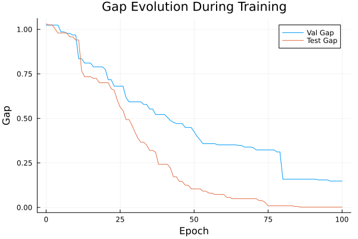
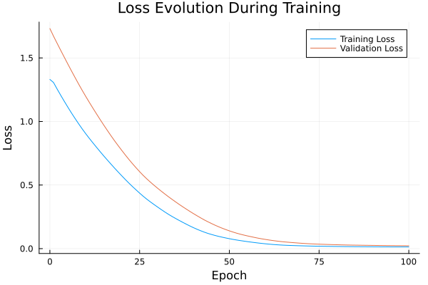

Basic Tutorial: Training with FYL on Argmax Benchmark
This tutorial demonstrates the basic workflow for training a policy using the Perturbed Fenchel-Young Loss algorithm.
Setup
using DecisionFocusedLearningAlgorithms
using DecisionFocusedLearningBenchmarks
using MLUtils: splitobs
using PlotsCreate Benchmark and Data
b = ArgmaxBenchmark()
dataset = generate_dataset(b, 100)
train_data, val_data, test_data = splitobs(dataset; at=(0.3, 0.3, 0.4))(DecisionFocusedLearningBenchmarks.Utils.DataSample{@NamedTuple{}, @NamedTuple{}, Matrix{Float32}, Vector{Float32}, Vector{Float32}}[DataSample(x=Float32[0.684983 -0.288564 … -1.08055 0.0287173; 0.0850693 0.17115 … -0.953031 1.17569; … ; -0.960901 -0.226173 … 1.26713 -0.108193; -0.460565 0.286529 … 0.539312 -0.711463], θ=Float32[0.0337838, 0.843762, -1.15834, -1.54432, 1.1592, 1.7482, 1.00976, -1.21869, -0.816265, -0.114943], y=Float32[0.0, 0.0, 0.0, 0.0, 0.0, 1.0, 0.0, 0.0, 0.0, 0.0]), DataSample(x=Float32[1.63323 0.117505 … 0.28395 -0.165602; -0.159134 -1.0616 … 0.0588039 -1.18769; … ; -0.518201 -0.802136 … -1.13377 0.750536; 0.201873 0.308662 … 1.20622 -1.55829], θ=Float32[-3.73082, -0.963397, -4.44177, 1.2484, -1.93543, 1.7685, -3.23325, 1.67025, -1.21967, -0.787779], y=Float32[0.0, 0.0, 0.0, 0.0, 0.0, 1.0, 0.0, 0.0, 0.0, 0.0]), DataSample(x=Float32[-0.0876732 -0.818002 … -0.824245 -0.377988; 1.1843 -0.0401349 … 0.603281 0.142116; … ; -1.04486 0.207097 … 0.426838 -1.13627; 0.662422 0.607564 … -0.252584 0.398153], θ=Float32[-0.941537, -0.208922, -1.66079, 2.36589, -0.0302506, -0.336326, -0.510073, 2.9597, 2.5357, -0.256045], y=Float32[0.0, 0.0, 0.0, 0.0, 0.0, 0.0, 0.0, 1.0, 0.0, 0.0]), DataSample(x=Float32[0.850404 -0.669222 … -2.48043 -1.26741; -1.36512 1.08647 … -1.38858 1.09988; … ; -2.39528 -0.284918 … -1.10469 -3.03746; 1.75337 -0.375143 … -1.18401 0.0375505], θ=Float32[-2.86216, 1.53087, -0.41713, 1.44362, 0.71389, -0.195651, -0.865639, -2.06729, 0.610294, 1.80779], y=Float32[0.0, 0.0, 0.0, 0.0, 0.0, 0.0, 0.0, 0.0, 0.0, 1.0]), DataSample(x=Float32[0.355607 -1.68755 … 0.744798 -1.68222; -0.269421 -0.717193 … -0.382156 -2.65261; … ; 1.47491 0.588902 … -0.141232 -0.181527; 0.808445 0.217679 … -0.397265 2.10203], θ=Float32[-0.76835, 1.44401, 1.19353, 1.38317, 2.23109, 2.06009, -0.265505, -2.43609, -1.48727, -3.36711], y=Float32[0.0, 0.0, 0.0, 0.0, 1.0, 0.0, 0.0, 0.0, 0.0, 0.0]), DataSample(x=Float32[-0.0204638 0.00278916 … -1.13381 -0.155085; 0.159238 -0.652231 … 0.342368 -1.26163; … ; 0.493909 -1.12523 … -0.776049 -1.16056; -1.08404 0.849353 … 0.408983 -0.0888602], θ=Float32[1.43873, -1.6059, 0.907856, 1.74911, 0.983989, -3.64495, -2.20158, -0.917916, -0.24625, -1.21553], y=Float32[0.0, 0.0, 0.0, 1.0, 0.0, 0.0, 0.0, 0.0, 0.0, 0.0]), DataSample(x=Float32[0.960509 -0.0669236 … -1.40601 -0.848535; -1.39728 1.05529 … 0.3142 0.961507; … ; -0.552875 0.585578 … 1.67674 0.34433; -0.0158927 1.22143 … 2.67111 0.109573], θ=Float32[-2.61057, -0.727545, -0.538482, -0.0295088, -1.18129, -0.116746, -0.217148, -0.556376, 0.0733494, 1.55897], y=Float32[0.0, 0.0, 0.0, 0.0, 0.0, 0.0, 0.0, 0.0, 0.0, 1.0]), DataSample(x=Float32[-1.69559 -1.90877 … 1.54236 1.15048; -0.44409 -0.853002 … -0.436273 0.768904; … ; 0.645569 -1.44752 … -1.03942 0.301255; -0.203438 -0.481233 … -2.03787 -0.718707], θ=Float32[0.932736, -0.24657, -2.33617, -2.45798, -1.27393, -2.58863, 1.55419, -2.65909, -0.722609, -0.491229], y=Float32[0.0, 0.0, 0.0, 0.0, 0.0, 0.0, 1.0, 0.0, 0.0, 0.0]), DataSample(x=Float32[1.02428 -1.17925 … -1.25786 -1.193; -1.33139 -0.260383 … -0.325372 -1.04464; … ; 1.56062 0.791896 … 0.0805743 -0.600829; 1.9566 0.68843 … 0.551922 1.28224], θ=Float32[-2.4672, -0.680038, -1.48153, 1.22716, -0.714329, -1.21684, 1.5729, 0.40082, -0.720211, -1.64631], y=Float32[0.0, 0.0, 0.0, 0.0, 0.0, 0.0, 1.0, 0.0, 0.0, 0.0]), DataSample(x=Float32[1.01919 -0.332642 … 2.24766 -1.19574; 1.97596 -0.795585 … -0.482547 -1.04011; … ; -0.702643 0.237927 … -2.34446 -1.79931; -1.13856 0.477356 … -0.507759 -0.620992], θ=Float32[1.20875, -1.61738, -1.5775, 1.15397, 0.417307, 0.431108, -0.246648, -0.251331, -3.7099, -0.601124], y=Float32[1.0, 0.0, 0.0, 0.0, 0.0, 0.0, 0.0, 0.0, 0.0, 0.0]) … DataSample(x=Float32[0.939462 1.35485 … 0.153748 0.653994; 0.166098 -2.21823 … -0.640797 -0.109374; … ; -0.251457 1.65926 … -0.794894 0.311694; 1.37348 0.00735095 … 0.416267 -1.3492], θ=Float32[-0.635523, -1.96423, -0.0428581, -1.21324, 1.2393, 0.932198, -1.24901, -0.564112, -1.69212, 0.889795], y=Float32[0.0, 0.0, 0.0, 0.0, 1.0, 0.0, 0.0, 0.0, 0.0, 0.0]), DataSample(x=Float32[1.24131 0.891096 … -0.328653 -0.818206; -2.58224 2.13381 … 2.18883 -0.302564; … ; 1.92835 -0.705927 … -0.340601 0.320324; 0.810793 -0.120485 … -0.0385453 -1.13599], θ=Float32[-3.00404, 1.26824, -0.075566, -1.61114, -0.262603, 1.42744, -1.5021, -0.239751, 2.27047, 0.206741], y=Float32[0.0, 0.0, 0.0, 0.0, 0.0, 0.0, 0.0, 0.0, 1.0, 0.0]), DataSample(x=Float32[-0.107279 -0.371717 … -0.650032 -0.484593; 0.442622 1.47865 … 0.660242 0.981294; … ; -0.524134 0.418777 … -0.951613 0.196768; -0.0380719 -2.07971 … -0.855545 0.256789], θ=Float32[-1.16782, 3.39161, 0.865942, -2.54595, -0.0117246, -1.05017, 0.905665, -1.07395, 2.0957, 1.05903], y=Float32[0.0, 1.0, 0.0, 0.0, 0.0, 0.0, 0.0, 0.0, 0.0, 0.0]), DataSample(x=Float32[0.620851 1.68657 … -0.126853 -0.86044; 0.387951 0.436241 … -0.731464 -1.57887; … ; 0.0045476 0.321983 … -1.31484 0.369619; 0.214952 -0.613166 … -0.208462 -1.53728], θ=Float32[-0.320169, -2.08643, 1.27348, 1.71652, 0.0136652, -1.75649, 0.599923, -0.893119, -1.23062, 0.0658012], y=Float32[0.0, 0.0, 0.0, 1.0, 0.0, 0.0, 0.0, 0.0, 0.0, 0.0]), DataSample(x=Float32[-0.18896 -0.970438 … 0.545354 -0.450835; 1.94639 0.937342 … 1.65779 1.51203; … ; 0.0607812 0.882466 … 0.420078 -0.340939; -0.504735 0.262948 … -0.486254 -1.546], θ=Float32[3.59041, 0.431476, 0.231328, -0.859257, 0.771977, 0.799832, -1.6443, -2.43737, 1.6247, 2.30065], y=Float32[1.0, 0.0, 0.0, 0.0, 0.0, 0.0, 0.0, 0.0, 0.0, 0.0]), DataSample(x=Float32[-2.03429 0.385429 … 0.507542 2.56674; 0.485074 -0.189885 … -0.605792 -0.243598; … ; -2.27638 3.0871 … -0.44543 -0.902338; 0.524127 0.706166 … -1.96479 1.44371], θ=Float32[-0.375697, 0.09905, 2.54083, 1.33497, -2.27824, 0.25907, 0.604477, -0.107095, -1.70145, -5.19238], y=Float32[0.0, 0.0, 1.0, 0.0, 0.0, 0.0, 0.0, 0.0, 0.0, 0.0]), DataSample(x=Float32[0.258712 -0.972334 … 0.488241 -0.830718; 0.837572 0.0762298 … -1.4546 -0.645749; … ; 0.601101 -0.769763 … -0.455131 -1.16322; -1.23148 -0.0818691 … 1.53016 -1.33143], θ=Float32[1.87479, -0.114931, 2.99328, -1.60411, -0.544645, -1.05784, -0.157558, 2.42832, -1.89979, 0.128203], y=Float32[0.0, 0.0, 1.0, 0.0, 0.0, 0.0, 0.0, 0.0, 0.0, 0.0]), DataSample(x=Float32[-1.45928 0.0312455 … -0.734071 0.308496; -0.129721 -0.877135 … 0.598479 0.804289; … ; 0.440655 -1.08627 … -0.859255 0.542094; 1.76172 -2.05652 … -0.17297 2.16064], θ=Float32[1.29227, -2.23394, -2.41339, -0.106379, 1.61806, 1.25317, -2.34589, -3.30162, 0.981518, -1.19285], y=Float32[0.0, 0.0, 0.0, 0.0, 1.0, 0.0, 0.0, 0.0, 0.0, 0.0]), DataSample(x=Float32[0.00113813 0.310699 … -1.19994 -0.224249; -1.14224 1.1468 … -1.55269 -0.981629; … ; 0.896978 -0.942206 … 1.18095 -1.09706; 0.859335 0.0363331 … 0.648647 -0.405813], θ=Float32[-1.63498, 1.89231, -1.87113, -0.657437, 1.08399, -2.08595, 1.17236, 3.00376, -0.726998, -1.91865], y=Float32[0.0, 0.0, 0.0, 0.0, 0.0, 0.0, 0.0, 1.0, 0.0, 0.0]), DataSample(x=Float32[0.467912 -0.026413 … 0.72975 0.00492757; -0.668007 0.241302 … 0.691425 1.02368; … ; 0.733461 0.166743 … -0.612701 0.0377744; -1.15015 -1.01752 … 0.934695 1.07774], θ=Float32[0.452209, 1.98931, -1.79488, 2.07568, -2.67156, 1.33608, 0.333269, 0.335106, -1.09256, 0.362755], y=Float32[0.0, 0.0, 0.0, 1.0, 0.0, 0.0, 0.0, 0.0, 0.0, 0.0])], DecisionFocusedLearningBenchmarks.Utils.DataSample{@NamedTuple{}, @NamedTuple{}, Matrix{Float32}, Vector{Float32}, Vector{Float32}}[DataSample(x=Float32[0.365546 -0.110651 … 0.473767 -1.87002; -0.340421 0.234001 … 0.488582 -1.06462; … ; -0.400945 0.0804736 … -0.801973 0.683036; 0.760481 -0.141921 … -0.822784 1.73035], θ=Float32[-1.87944, -0.145138, 0.532139, 0.717652, 1.62392, -3.75536, 3.33193, 1.16869, 0.964591, -0.468092], y=Float32[0.0, 0.0, 0.0, 0.0, 0.0, 0.0, 1.0, 0.0, 0.0, 0.0]), DataSample(x=Float32[0.230658 0.843953 … -0.385965 -0.0721103; 0.72322 -0.528526 … 0.0542342 1.9516; … ; -1.17119 0.746884 … -1.48924 1.10217; 0.00617259 0.482434 … -0.101909 0.304812], θ=Float32[0.653033, -1.43533, -0.539039, 1.6854, 3.33026, -2.27172, -1.36721, 0.600744, 0.89046, 1.22242], y=Float32[0.0, 0.0, 0.0, 0.0, 1.0, 0.0, 0.0, 0.0, 0.0, 0.0]), DataSample(x=Float32[-0.789294 1.09066 … 0.876343 0.414122; 0.498253 -1.67738 … -0.630257 0.537791; … ; -0.287435 0.61597 … 0.290223 2.59635; 1.23525 -1.49039 … -1.22146 3.24934], θ=Float32[-0.0446824, -0.416524, -0.851836, -0.448516, -1.19866, -0.339836, -0.448768, -1.48115, -0.242839, -0.5957], y=Float32[1.0, 0.0, 0.0, 0.0, 0.0, 0.0, 0.0, 0.0, 0.0, 0.0]), DataSample(x=Float32[0.289059 1.14161 … 0.380071 2.58893; -0.22752 -0.752747 … 0.680836 0.264693; … ; 1.81829 0.496707 … 1.33292 1.2684; 1.38199 -0.204566 … 0.455295 1.05691], θ=Float32[-1.00907, -0.578288, -2.53782, -0.340922, -1.94455, 0.912132, -0.0203687, 3.48126, 1.28728, -2.71657], y=Float32[0.0, 0.0, 0.0, 0.0, 0.0, 0.0, 0.0, 1.0, 0.0, 0.0]), DataSample(x=Float32[-0.194352 -0.0813506 … -1.37638 -0.188307; -0.921898 0.0956085 … 0.756051 0.199062; … ; -1.11445 -0.236492 … 1.78481 -0.183382; 1.25052 -1.20955 … 0.435007 -1.96891], θ=Float32[-2.15039, 1.47194, 0.683292, 0.716526, 2.00983, 0.22498, 0.359783, 2.60059, 2.92572, 1.57456], y=Float32[0.0, 0.0, 0.0, 0.0, 0.0, 0.0, 0.0, 0.0, 1.0, 0.0]), DataSample(x=Float32[0.84931 -1.03845 … -1.20021 -0.294106; -0.21708 0.294348 … 0.189837 1.4759; … ; -1.31258 -0.594351 … -1.20977 0.469348; -1.79599 -0.810942 … -1.23324 1.1649], θ=Float32[-0.55808, 0.428024, -0.728164, 1.61395, -3.73333, -0.324753, -0.476856, 0.416681, 1.02478, 1.20404], y=Float32[0.0, 0.0, 0.0, 1.0, 0.0, 0.0, 0.0, 0.0, 0.0, 0.0]), DataSample(x=Float32[-2.54914 0.987052 … -0.010911 0.61528; -0.724494 0.0955754 … 0.311695 -0.292086; … ; -0.383462 -2.55239 … 1.06628 0.0287325; 0.571655 1.04404 … -0.284516 0.241788], θ=Float32[0.906871, -3.58094, -1.69591, 0.183631, 0.231946, -0.585803, 1.50689, -1.52009, 0.927075, -0.363519], y=Float32[0.0, 0.0, 0.0, 0.0, 0.0, 0.0, 1.0, 0.0, 0.0, 0.0]), DataSample(x=Float32[0.022416 1.95698 … 2.68715 0.626462; 0.167491 0.524181 … 0.392958 0.685805; … ; -1.60275 -0.808226 … 1.43076 1.27121; -0.777909 0.216011 … -1.47915 -0.626358], θ=Float32[0.957197, -3.04106, -0.472378, 0.764455, -0.342533, -0.634527, 2.36254, 1.21342, 0.712177, 2.61176], y=Float32[0.0, 0.0, 0.0, 0.0, 0.0, 0.0, 0.0, 0.0, 0.0, 1.0]), DataSample(x=Float32[2.48898 0.702117 … 0.252596 -0.218253; 0.345072 -0.232966 … 0.625479 -1.48391; … ; -0.0328374 0.0391241 … 0.667432 0.553227; 1.15595 0.853645 … -0.267166 -0.949405], θ=Float32[-2.22322, -1.65585, 0.848379, -0.176061, 1.17397, 3.12299, 3.68244, 1.25626, 0.0289324, -1.0093], y=Float32[0.0, 0.0, 0.0, 0.0, 0.0, 0.0, 1.0, 0.0, 0.0, 0.0]), DataSample(x=Float32[0.464355 -2.28862 … -0.782486 -0.0335105; -0.476545 0.29439 … -1.16717 -1.82642; … ; -0.59466 -0.797912 … -0.52267 -1.14562; -0.88903 0.29415 … 0.547986 1.21757], θ=Float32[-2.2364, 1.04335, -0.384733, 1.26989, 2.29429, 1.32496, 2.12918, 1.99011, -1.33482, -2.07651], y=Float32[0.0, 0.0, 0.0, 0.0, 1.0, 0.0, 0.0, 0.0, 0.0, 0.0]) … DataSample(x=Float32[0.363718 -1.06252 … -0.39295 -0.779066; -0.401815 -0.245339 … -0.504316 -2.18034; … ; 0.240465 0.358173 … -0.805699 2.2229; 0.408813 -1.1285 … 0.622608 0.965724], θ=Float32[0.0289073, -0.0779857, -0.479838, 4.14273, 2.16677, 1.3389, -1.20458, 1.04328, -0.734005, -0.261322], y=Float32[0.0, 0.0, 0.0, 1.0, 0.0, 0.0, 0.0, 0.0, 0.0, 0.0]), DataSample(x=Float32[0.101954 0.4868 … -0.325685 0.188496; 0.328647 0.51597 … 1.65105 -1.48192; … ; -1.38019 0.0351863 … 1.01555 -0.0341; -1.43324 -0.249764 … -0.562522 -2.00597], θ=Float32[-0.32738, 0.0223277, -3.21162, 0.878363, -1.04389, 0.366893, 1.23586, -0.10727, 2.38586, -1.74084], y=Float32[0.0, 0.0, 0.0, 0.0, 0.0, 0.0, 0.0, 0.0, 1.0, 0.0]), DataSample(x=Float32[1.24253 0.514094 … 0.000891614 0.649809; 0.112596 0.0523519 … 1.74331 1.19242; … ; 1.04503 1.09246 … 0.215006 -1.50826; 0.0466982 -2.15779 … -1.64853 -0.087795], θ=Float32[-0.246859, -0.422666, 2.76171, 1.39428, 1.55325, 0.715814, -1.56089, 0.231954, 1.44756, -0.572652], y=Float32[0.0, 0.0, 1.0, 0.0, 0.0, 0.0, 0.0, 0.0, 0.0, 0.0]), DataSample(x=Float32[0.823518 0.0324023 … -1.51898 -0.219307; -0.897349 -0.894202 … 0.033082 -0.19157; … ; 0.758322 -1.09044 … 2.25434 -0.367545; -0.447406 -1.12267 … -0.237055 1.24898], θ=Float32[0.159388, -0.915164, 0.199273, 3.51901, -2.47921, 1.5062, 1.87649, -0.724009, 3.35415, 0.192851], y=Float32[0.0, 0.0, 0.0, 1.0, 0.0, 0.0, 0.0, 0.0, 0.0, 0.0]), DataSample(x=Float32[-0.715374 0.296127 … 0.605262 0.0686778; 0.0321112 0.716655 … 0.233284 0.0795819; … ; -0.574058 -0.110662 … -0.360545 1.06134; 0.0925714 -1.31302 … -1.45868 0.757076], θ=Float32[1.33039, 2.28133, 2.39979, 0.42361, 1.34556, -0.663437, -0.282329, -1.84308, -0.498919, 1.26902], y=Float32[0.0, 0.0, 1.0, 0.0, 0.0, 0.0, 0.0, 0.0, 0.0, 0.0]), DataSample(x=Float32[-0.725926 -0.559697 … -0.0865647 -1.63523; -0.903714 0.413616 … -0.00294279 0.620178; … ; -1.17933 -1.40099 … -0.847566 -1.27532; -0.677541 -1.0109 … -0.627144 -0.742357], θ=Float32[-1.07558, 1.24219, 0.0198338, -2.04108, -0.233517, -0.0689045, 1.54697, -0.745012, -0.269408, 1.29379], y=Float32[0.0, 0.0, 0.0, 0.0, 0.0, 0.0, 1.0, 0.0, 0.0, 0.0]), DataSample(x=Float32[1.26021 0.650717 … -0.625764 3.16264; -0.891978 -1.45983 … -1.24354 0.0721347; … ; -0.361474 1.13663 … 0.874814 0.240067; -0.471721 -0.00253777 … 0.378157 0.989779], θ=Float32[-0.474893, -0.395338, -1.46708, 2.22322, 0.228174, -1.84266, -0.105801, 0.472175, 0.0269514, -3.83832], y=Float32[0.0, 0.0, 0.0, 1.0, 0.0, 0.0, 0.0, 0.0, 0.0, 0.0]), DataSample(x=Float32[0.656944 -0.887194 … -0.468735 0.405047; 0.307079 -0.922933 … 1.34147 0.649513; … ; -1.11847 0.537019 … 0.747017 1.32615; -2.20484 -2.87221 … 1.43971 -0.182633], θ=Float32[-1.11825, 1.11943, 0.901692, 1.42535, 1.19573, -0.216253, -2.19994, 0.0461608, 2.3673, 0.675228], y=Float32[0.0, 0.0, 0.0, 0.0, 0.0, 0.0, 0.0, 0.0, 1.0, 0.0]), DataSample(x=Float32[-0.0660116 1.82968 … -1.3099 0.00290251; -0.726242 0.209261 … 0.350963 1.15662; … ; 1.07969 1.27248 … -0.493351 -1.03029; 0.409191 -1.30554 … 0.202947 0.291518], θ=Float32[-0.16427, 0.710262, 0.0912892, 1.40022, 0.289795, -1.76991, 0.469823, -1.03018, 1.41327, -0.628677], y=Float32[0.0, 0.0, 0.0, 0.0, 0.0, 0.0, 0.0, 0.0, 1.0, 0.0]), DataSample(x=Float32[0.361012 -1.73432 … -0.546762 0.608585; -1.51044 -0.539065 … 0.683822 -0.399695; … ; 1.47917 -0.0581682 … 0.488841 0.0581841; -1.08581 0.421578 … 0.606856 1.66641], θ=Float32[1.48531, 0.0820052, 2.21057, -0.310093, 0.503524, -1.43859, 0.152391, 1.76389, 2.59286, -0.971138], y=Float32[0.0, 0.0, 0.0, 0.0, 0.0, 0.0, 0.0, 0.0, 1.0, 0.0])], DecisionFocusedLearningBenchmarks.Utils.DataSample{@NamedTuple{}, @NamedTuple{}, Matrix{Float32}, Vector{Float32}, Vector{Float32}}[DataSample(x=Float32[-1.47932 0.546517 … 0.267464 -0.517709; -0.00478497 -1.04749 … -1.34732 1.16547; … ; 0.0788875 0.437077 … 0.367856 0.273049; -0.447161 0.590039 … -0.672202 0.393764], θ=Float32[0.796069, -0.362965, 0.275729, 2.98499, 2.10191, 0.942071, -0.00245035, 0.309255, -0.0626317, 0.983113], y=Float32[0.0, 0.0, 0.0, 1.0, 0.0, 0.0, 0.0, 0.0, 0.0, 0.0]), DataSample(x=Float32[0.457947 1.31694 … -0.493705 0.288431; -0.841361 -1.12875 … 0.282663 -1.68258; … ; -1.73366 0.248425 … 0.819868 0.867499; 1.51271 0.10867 … 0.00744803 -0.825398], θ=Float32[-2.49939, -2.9096, -1.75869, -0.532444, -0.0902495, -0.760835, -0.788605, 6.09216, 0.684253, -1.46431], y=Float32[0.0, 0.0, 0.0, 0.0, 0.0, 0.0, 0.0, 1.0, 0.0, 0.0]), DataSample(x=Float32[-0.0273801 0.0104004 … -0.526152 1.16157; 1.25277 -0.680467 … 0.990643 -1.27767; … ; 0.138918 -0.887162 … -0.317381 -1.27143; 1.92025 -0.12984 … -0.0229295 -0.38998], θ=Float32[-0.181411, -0.716234, 1.63671, 0.805508, -0.181586, -2.13259, 2.2076, 0.289521, 2.60254, -2.93413], y=Float32[0.0, 0.0, 0.0, 0.0, 0.0, 0.0, 0.0, 0.0, 1.0, 0.0]), DataSample(x=Float32[0.499618 -0.120475 … -0.431273 0.745819; -0.574392 0.751546 … -0.506888 -0.0077105; … ; 0.557081 -1.5175 … 0.279223 -0.358378; -2.1223 -0.659821 … -0.18921 0.0716421], θ=Float32[1.10936, 1.27803, 1.66671, -1.85631, 0.768905, -0.95876, 1.53698, 0.665055, 0.600161, -1.66459], y=Float32[0.0, 0.0, 1.0, 0.0, 0.0, 0.0, 0.0, 0.0, 0.0, 0.0]), DataSample(x=Float32[-0.251505 -0.399728 … 0.647693 1.03327; -1.40174 -1.06377 … 0.974142 -0.0190872; … ; 0.71649 -0.771956 … -0.202436 -1.60457; 0.152398 1.98045 … -0.510747 -0.263733], θ=Float32[0.249065, -2.25868, 0.131905, 1.18938, 0.0917007, 0.300542, -1.667, -1.40488, -1.36247, -0.671319], y=Float32[0.0, 0.0, 0.0, 1.0, 0.0, 0.0, 0.0, 0.0, 0.0, 0.0]), DataSample(x=Float32[-0.932363 0.948714 … 0.838648 -0.820937; -0.114809 -0.302177 … 1.17255 0.860004; … ; -0.384332 0.322567 … 0.242212 -1.18972; 0.867442 -0.150891 … 0.659263 0.355064], θ=Float32[-0.365361, -0.642053, -2.76956, 1.5519, 1.10553, 2.79707, 0.192386, 1.52876, 0.405716, 0.961061], y=Float32[0.0, 0.0, 0.0, 0.0, 0.0, 1.0, 0.0, 0.0, 0.0, 0.0]), DataSample(x=Float32[1.29302 0.146537 … -1.36588 -0.000287629; -0.527016 0.0322807 … -1.32766 0.34281; … ; 0.481551 0.39953 … 0.247074 -1.19329; 0.541718 -1.01105 … 1.1877 -1.82739], θ=Float32[-0.794959, -0.00672483, -2.94202, -1.59399, 0.151899, -1.92054, 1.6688, -1.57953, -0.401546, -0.789232], y=Float32[0.0, 0.0, 0.0, 0.0, 0.0, 0.0, 1.0, 0.0, 0.0, 0.0]), DataSample(x=Float32[-1.08567 0.838971 … 0.985975 -0.269872; -0.155286 0.166954 … 0.152936 -0.904541; … ; -0.657389 -0.691358 … 1.24762 0.275705; -0.8539 -2.00065 … 3.11128 -1.44921], θ=Float32[0.52157, 0.483531, -0.711281, 2.82533, 2.24285, 0.283279, 1.84419, 3.04588, -2.29246, 0.228972], y=Float32[0.0, 0.0, 0.0, 0.0, 0.0, 0.0, 0.0, 1.0, 0.0, 0.0]), DataSample(x=Float32[-0.521081 1.3298 … -1.04357 -0.00603958; -1.49421 -0.170383 … -0.92361 -0.445454; … ; -0.218312 -0.199758 … -1.21349 -0.169927; -0.515357 1.33143 … -0.803354 0.779725], θ=Float32[-0.920491, -2.42814, 3.67389, -1.18439, -0.825023, 2.24085, 0.482813, 0.798335, -0.785237, -0.10841], y=Float32[0.0, 0.0, 1.0, 0.0, 0.0, 0.0, 0.0, 0.0, 0.0, 0.0]), DataSample(x=Float32[0.214666 -2.17761 … 0.66428 1.47596; -0.102905 -0.176592 … 1.7777 -0.0759349; … ; -1.1162 0.532815 … 0.501379 1.15167; 0.898132 -1.40182 … 0.102699 -3.06904], θ=Float32[-1.84371, 2.46608, 0.649881, 3.57018, 1.73982, -0.0786781, 2.40101, 2.54611, 0.663864, 1.22427], y=Float32[0.0, 0.0, 0.0, 1.0, 0.0, 0.0, 0.0, 0.0, 0.0, 0.0]) … DataSample(x=Float32[-1.58368 0.422907 … 0.31234 1.09144; -1.03098 -1.20534 … 0.557331 -0.739308; … ; -0.873093 0.0797865 … 0.366021 -0.595991; -1.40594 -0.584898 … 1.64775 -0.417409], θ=Float32[0.395961, -3.37926, -1.16951, 0.45197, -0.485632, 0.274189, 0.718845, 3.34338, -0.64541, -3.11053], y=Float32[0.0, 0.0, 0.0, 0.0, 0.0, 0.0, 0.0, 1.0, 0.0, 0.0]), DataSample(x=Float32[0.245618 0.313307 … 0.107662 -0.762384; 0.150968 0.739649 … 1.98017 1.63855; … ; 0.405431 0.472127 … 0.104058 -0.47482; 2.27244 0.240619 … -0.111624 1.03499], θ=Float32[-2.73211, -0.684889, 1.12674, 2.70738, 0.540793, -0.00195554, 0.319954, -0.0354122, 0.282825, 0.875501], y=Float32[0.0, 0.0, 0.0, 1.0, 0.0, 0.0, 0.0, 0.0, 0.0, 0.0]), DataSample(x=Float32[0.856368 -1.44205 … -0.827598 1.5824; 0.645576 -0.0239307 … -1.44614 1.71572; … ; -1.16934 1.02336 … -0.971472 0.885746; 0.366003 -1.61512 … -0.534944 0.461333], θ=Float32[-1.52159, 2.56545, -0.887004, 1.06158, 0.400915, 0.865936, -0.822091, -1.39357, -2.00899, 0.521826], y=Float32[0.0, 1.0, 0.0, 0.0, 0.0, 0.0, 0.0, 0.0, 0.0, 0.0]), DataSample(x=Float32[-0.533322 -0.930558 … -0.211297 0.527675; -0.546776 1.52368 … 0.693413 -1.85522; … ; -1.50345 -0.494377 … -0.103504 1.2176; -1.09414 -1.91241 … 0.124855 -0.292045], θ=Float32[0.225068, 2.70335, 0.912533, -0.743438, 0.0996581, 2.26902, -0.219671, 1.63783, 1.25058, -1.42098], y=Float32[0.0, 1.0, 0.0, 0.0, 0.0, 0.0, 0.0, 0.0, 0.0, 0.0]), DataSample(x=Float32[0.692557 -0.287814 … 0.202395 0.311481; 0.632961 -0.807446 … 1.59559 1.32084; … ; 1.01414 -0.828234 … -1.98581 2.17169; -0.233163 -0.745201 … -0.0789316 1.57755], θ=Float32[0.102544, -0.0465025, 0.377516, -1.0129, -2.565, 3.38146, 1.56415, 0.886519, 1.05146, 0.25847], y=Float32[0.0, 0.0, 0.0, 0.0, 0.0, 1.0, 0.0, 0.0, 0.0, 0.0]), DataSample(x=Float32[0.156229 1.19117 … 0.0365357 0.778538; 0.118407 -1.38513 … -0.241642 1.04903; … ; -1.33231 -0.431829 … 0.63328 -0.837611; -0.521589 0.884204 … 0.64301 1.74641], θ=Float32[-1.71203, -3.23694, 1.26261, 1.94948, -1.57248, -1.328, -0.132584, 1.14065, 0.675047, 0.576929], y=Float32[0.0, 0.0, 0.0, 1.0, 0.0, 0.0, 0.0, 0.0, 0.0, 0.0]), DataSample(x=Float32[0.078297 1.89179 … 2.34536 0.415734; 0.191665 -0.426553 … 0.932959 1.23161; … ; -1.7927 0.910777 … 1.55727 -0.438917; 1.87085 -0.430132 … 0.178126 0.335351], θ=Float32[-4.40608, -1.71322, -2.01338, 0.423416, -1.19227, -0.0014415, -2.85177, 1.22021, 0.353411, 0.680607], y=Float32[0.0, 0.0, 0.0, 0.0, 0.0, 0.0, 0.0, 1.0, 0.0, 0.0]), DataSample(x=Float32[0.000140592 0.950912 … 0.349865 0.0696353; 1.09992 1.00915 … 2.11684 3.13532; … ; -1.91929 0.336532 … 1.93131 0.826405; 2.70111 -0.354531 … -0.0979157 -0.202243], θ=Float32[0.132836, 1.79243, -0.814626, 2.39812, 1.68825, 2.02894, -0.739425, 0.815269, 1.7106, 4.78121], y=Float32[0.0, 0.0, 0.0, 0.0, 0.0, 0.0, 0.0, 0.0, 0.0, 1.0]), DataSample(x=Float32[1.71154 -0.0655773 … -0.329889 -0.519777; -1.59023 -0.347301 … 0.74187 -1.73833; … ; 0.133188 0.221354 … 0.957115 2.74998; 0.350444 -0.813114 … -2.17504 0.894202], θ=Float32[-2.30324, 0.457818, 0.511405, -0.177918, 4.18662, 2.86551, -1.38279, -0.280906, 1.87459, -2.05308], y=Float32[0.0, 0.0, 0.0, 0.0, 1.0, 0.0, 0.0, 0.0, 0.0, 0.0]), DataSample(x=Float32[-0.126089 -0.540877 … 1.44617 0.656771; 0.767302 1.72384 … 0.235369 -0.439391; … ; 1.6007 1.2695 … 0.689442 1.83492; 1.16411 -1.11923 … -1.35961 0.688583], θ=Float32[1.99046, 4.41331, -1.56285, -2.38407, 4.4594, -0.418274, 2.62779, -1.46133, 0.754134, 0.518766], y=Float32[0.0, 0.0, 0.0, 0.0, 1.0, 0.0, 0.0, 0.0, 0.0, 0.0])], DecisionFocusedLearningBenchmarks.Utils.DataSample{@NamedTuple{}, @NamedTuple{}, Matrix{Float32}, Vector{Float32}, Vector{Float32}}[])Create Policy
model = generate_statistical_model(b; seed=0)
maximizer = generate_maximizer(b)
policy = DFLPolicy(model, maximizer)DFLPolicy{Flux.Chain{Tuple{Flux.Dense{typeof(identity), Matrix{Float32}, Bool}, typeof(vec)}}, typeof(DecisionFocusedLearningBenchmarks.Argmax.one_hot_argmax)}(Chain(Dense(5 => 1; bias=false), vec), DecisionFocusedLearningBenchmarks.Argmax.one_hot_argmax)Configure Algorithm
algorithm = PerturbedFenchelYoungLossImitation(;
nb_samples=10, ε=0.1, threaded=true, seed=0
)PerturbedFenchelYoungLossImitation{Optimisers.Adam{Float64, Tuple{Float64, Float64}, Float64}, Int64}(10, 0.1, true, Optimisers.Adam(eta=0.001, beta=(0.9, 0.999), epsilon=1.0e-8), 0, false)Define Metrics to track during training
validation_loss_metric = FYLLossMetric(val_data, :validation_loss)
val_gap_metric = FunctionMetric(:val_gap, val_data) do ctx, data
return compute_gap(b, data, ctx.policy.statistical_model, ctx.policy.maximizer)
end
test_gap_metric = FunctionMetric(:test_gap, test_data) do ctx, data
return compute_gap(b, data, ctx.policy.statistical_model, ctx.policy.maximizer)
end
metrics = (validation_loss_metric, val_gap_metric, test_gap_metric)(FYLLossMetric{SubArray{DecisionFocusedLearningBenchmarks.Utils.DataSample{@NamedTuple{}, @NamedTuple{}, Matrix{Float32}, Vector{Float32}, Vector{Float32}}, 1, Vector{DecisionFocusedLearningBenchmarks.Utils.DataSample{@NamedTuple{}, @NamedTuple{}, Matrix{Float32}, Vector{Float32}, Vector{Float32}}}, Tuple{UnitRange{Int64}}, true}}(DecisionFocusedLearningBenchmarks.Utils.DataSample{@NamedTuple{}, @NamedTuple{}, Matrix{Float32}, Vector{Float32}, Vector{Float32}}[DataSample(x=Float32[0.365546 -0.110651 … 0.473767 -1.87002; -0.340421 0.234001 … 0.488582 -1.06462; … ; -0.400945 0.0804736 … -0.801973 0.683036; 0.760481 -0.141921 … -0.822784 1.73035], θ=Float32[-1.87944, -0.145138, 0.532139, 0.717652, 1.62392, -3.75536, 3.33193, 1.16869, 0.964591, -0.468092], y=Float32[0.0, 0.0, 0.0, 0.0, 0.0, 0.0, 1.0, 0.0, 0.0, 0.0]), DataSample(x=Float32[0.230658 0.843953 … -0.385965 -0.0721103; 0.72322 -0.528526 … 0.0542342 1.9516; … ; -1.17119 0.746884 … -1.48924 1.10217; 0.00617259 0.482434 … -0.101909 0.304812], θ=Float32[0.653033, -1.43533, -0.539039, 1.6854, 3.33026, -2.27172, -1.36721, 0.600744, 0.89046, 1.22242], y=Float32[0.0, 0.0, 0.0, 0.0, 1.0, 0.0, 0.0, 0.0, 0.0, 0.0]), DataSample(x=Float32[-0.789294 1.09066 … 0.876343 0.414122; 0.498253 -1.67738 … -0.630257 0.537791; … ; -0.287435 0.61597 … 0.290223 2.59635; 1.23525 -1.49039 … -1.22146 3.24934], θ=Float32[-0.0446824, -0.416524, -0.851836, -0.448516, -1.19866, -0.339836, -0.448768, -1.48115, -0.242839, -0.5957], y=Float32[1.0, 0.0, 0.0, 0.0, 0.0, 0.0, 0.0, 0.0, 0.0, 0.0]), DataSample(x=Float32[0.289059 1.14161 … 0.380071 2.58893; -0.22752 -0.752747 … 0.680836 0.264693; … ; 1.81829 0.496707 … 1.33292 1.2684; 1.38199 -0.204566 … 0.455295 1.05691], θ=Float32[-1.00907, -0.578288, -2.53782, -0.340922, -1.94455, 0.912132, -0.0203687, 3.48126, 1.28728, -2.71657], y=Float32[0.0, 0.0, 0.0, 0.0, 0.0, 0.0, 0.0, 1.0, 0.0, 0.0]), DataSample(x=Float32[-0.194352 -0.0813506 … -1.37638 -0.188307; -0.921898 0.0956085 … 0.756051 0.199062; … ; -1.11445 -0.236492 … 1.78481 -0.183382; 1.25052 -1.20955 … 0.435007 -1.96891], θ=Float32[-2.15039, 1.47194, 0.683292, 0.716526, 2.00983, 0.22498, 0.359783, 2.60059, 2.92572, 1.57456], y=Float32[0.0, 0.0, 0.0, 0.0, 0.0, 0.0, 0.0, 0.0, 1.0, 0.0]), DataSample(x=Float32[0.84931 -1.03845 … -1.20021 -0.294106; -0.21708 0.294348 … 0.189837 1.4759; … ; -1.31258 -0.594351 … -1.20977 0.469348; -1.79599 -0.810942 … -1.23324 1.1649], θ=Float32[-0.55808, 0.428024, -0.728164, 1.61395, -3.73333, -0.324753, -0.476856, 0.416681, 1.02478, 1.20404], y=Float32[0.0, 0.0, 0.0, 1.0, 0.0, 0.0, 0.0, 0.0, 0.0, 0.0]), DataSample(x=Float32[-2.54914 0.987052 … -0.010911 0.61528; -0.724494 0.0955754 … 0.311695 -0.292086; … ; -0.383462 -2.55239 … 1.06628 0.0287325; 0.571655 1.04404 … -0.284516 0.241788], θ=Float32[0.906871, -3.58094, -1.69591, 0.183631, 0.231946, -0.585803, 1.50689, -1.52009, 0.927075, -0.363519], y=Float32[0.0, 0.0, 0.0, 0.0, 0.0, 0.0, 1.0, 0.0, 0.0, 0.0]), DataSample(x=Float32[0.022416 1.95698 … 2.68715 0.626462; 0.167491 0.524181 … 0.392958 0.685805; … ; -1.60275 -0.808226 … 1.43076 1.27121; -0.777909 0.216011 … -1.47915 -0.626358], θ=Float32[0.957197, -3.04106, -0.472378, 0.764455, -0.342533, -0.634527, 2.36254, 1.21342, 0.712177, 2.61176], y=Float32[0.0, 0.0, 0.0, 0.0, 0.0, 0.0, 0.0, 0.0, 0.0, 1.0]), DataSample(x=Float32[2.48898 0.702117 … 0.252596 -0.218253; 0.345072 -0.232966 … 0.625479 -1.48391; … ; -0.0328374 0.0391241 … 0.667432 0.553227; 1.15595 0.853645 … -0.267166 -0.949405], θ=Float32[-2.22322, -1.65585, 0.848379, -0.176061, 1.17397, 3.12299, 3.68244, 1.25626, 0.0289324, -1.0093], y=Float32[0.0, 0.0, 0.0, 0.0, 0.0, 0.0, 1.0, 0.0, 0.0, 0.0]), DataSample(x=Float32[0.464355 -2.28862 … -0.782486 -0.0335105; -0.476545 0.29439 … -1.16717 -1.82642; … ; -0.59466 -0.797912 … -0.52267 -1.14562; -0.88903 0.29415 … 0.547986 1.21757], θ=Float32[-2.2364, 1.04335, -0.384733, 1.26989, 2.29429, 1.32496, 2.12918, 1.99011, -1.33482, -2.07651], y=Float32[0.0, 0.0, 0.0, 0.0, 1.0, 0.0, 0.0, 0.0, 0.0, 0.0]) … DataSample(x=Float32[0.363718 -1.06252 … -0.39295 -0.779066; -0.401815 -0.245339 … -0.504316 -2.18034; … ; 0.240465 0.358173 … -0.805699 2.2229; 0.408813 -1.1285 … 0.622608 0.965724], θ=Float32[0.0289073, -0.0779857, -0.479838, 4.14273, 2.16677, 1.3389, -1.20458, 1.04328, -0.734005, -0.261322], y=Float32[0.0, 0.0, 0.0, 1.0, 0.0, 0.0, 0.0, 0.0, 0.0, 0.0]), DataSample(x=Float32[0.101954 0.4868 … -0.325685 0.188496; 0.328647 0.51597 … 1.65105 -1.48192; … ; -1.38019 0.0351863 … 1.01555 -0.0341; -1.43324 -0.249764 … -0.562522 -2.00597], θ=Float32[-0.32738, 0.0223277, -3.21162, 0.878363, -1.04389, 0.366893, 1.23586, -0.10727, 2.38586, -1.74084], y=Float32[0.0, 0.0, 0.0, 0.0, 0.0, 0.0, 0.0, 0.0, 1.0, 0.0]), DataSample(x=Float32[1.24253 0.514094 … 0.000891614 0.649809; 0.112596 0.0523519 … 1.74331 1.19242; … ; 1.04503 1.09246 … 0.215006 -1.50826; 0.0466982 -2.15779 … -1.64853 -0.087795], θ=Float32[-0.246859, -0.422666, 2.76171, 1.39428, 1.55325, 0.715814, -1.56089, 0.231954, 1.44756, -0.572652], y=Float32[0.0, 0.0, 1.0, 0.0, 0.0, 0.0, 0.0, 0.0, 0.0, 0.0]), DataSample(x=Float32[0.823518 0.0324023 … -1.51898 -0.219307; -0.897349 -0.894202 … 0.033082 -0.19157; … ; 0.758322 -1.09044 … 2.25434 -0.367545; -0.447406 -1.12267 … -0.237055 1.24898], θ=Float32[0.159388, -0.915164, 0.199273, 3.51901, -2.47921, 1.5062, 1.87649, -0.724009, 3.35415, 0.192851], y=Float32[0.0, 0.0, 0.0, 1.0, 0.0, 0.0, 0.0, 0.0, 0.0, 0.0]), DataSample(x=Float32[-0.715374 0.296127 … 0.605262 0.0686778; 0.0321112 0.716655 … 0.233284 0.0795819; … ; -0.574058 -0.110662 … -0.360545 1.06134; 0.0925714 -1.31302 … -1.45868 0.757076], θ=Float32[1.33039, 2.28133, 2.39979, 0.42361, 1.34556, -0.663437, -0.282329, -1.84308, -0.498919, 1.26902], y=Float32[0.0, 0.0, 1.0, 0.0, 0.0, 0.0, 0.0, 0.0, 0.0, 0.0]), DataSample(x=Float32[-0.725926 -0.559697 … -0.0865647 -1.63523; -0.903714 0.413616 … -0.00294279 0.620178; … ; -1.17933 -1.40099 … -0.847566 -1.27532; -0.677541 -1.0109 … -0.627144 -0.742357], θ=Float32[-1.07558, 1.24219, 0.0198338, -2.04108, -0.233517, -0.0689045, 1.54697, -0.745012, -0.269408, 1.29379], y=Float32[0.0, 0.0, 0.0, 0.0, 0.0, 0.0, 1.0, 0.0, 0.0, 0.0]), DataSample(x=Float32[1.26021 0.650717 … -0.625764 3.16264; -0.891978 -1.45983 … -1.24354 0.0721347; … ; -0.361474 1.13663 … 0.874814 0.240067; -0.471721 -0.00253777 … 0.378157 0.989779], θ=Float32[-0.474893, -0.395338, -1.46708, 2.22322, 0.228174, -1.84266, -0.105801, 0.472175, 0.0269514, -3.83832], y=Float32[0.0, 0.0, 0.0, 1.0, 0.0, 0.0, 0.0, 0.0, 0.0, 0.0]), DataSample(x=Float32[0.656944 -0.887194 … -0.468735 0.405047; 0.307079 -0.922933 … 1.34147 0.649513; … ; -1.11847 0.537019 … 0.747017 1.32615; -2.20484 -2.87221 … 1.43971 -0.182633], θ=Float32[-1.11825, 1.11943, 0.901692, 1.42535, 1.19573, -0.216253, -2.19994, 0.0461608, 2.3673, 0.675228], y=Float32[0.0, 0.0, 0.0, 0.0, 0.0, 0.0, 0.0, 0.0, 1.0, 0.0]), DataSample(x=Float32[-0.0660116 1.82968 … -1.3099 0.00290251; -0.726242 0.209261 … 0.350963 1.15662; … ; 1.07969 1.27248 … -0.493351 -1.03029; 0.409191 -1.30554 … 0.202947 0.291518], θ=Float32[-0.16427, 0.710262, 0.0912892, 1.40022, 0.289795, -1.76991, 0.469823, -1.03018, 1.41327, -0.628677], y=Float32[0.0, 0.0, 0.0, 0.0, 0.0, 0.0, 0.0, 0.0, 1.0, 0.0]), DataSample(x=Float32[0.361012 -1.73432 … -0.546762 0.608585; -1.51044 -0.539065 … 0.683822 -0.399695; … ; 1.47917 -0.0581682 … 0.488841 0.0581841; -1.08581 0.421578 … 0.606856 1.66641], θ=Float32[1.48531, 0.0820052, 2.21057, -0.310093, 0.503524, -1.43859, 0.152391, 1.76389, 2.59286, -0.971138], y=Float32[0.0, 0.0, 0.0, 0.0, 0.0, 0.0, 0.0, 0.0, 1.0, 0.0])], LossAccumulator(:validation_loss, 0.0, 0)), FunctionMetric{Main.var"#2#3", SubArray{DecisionFocusedLearningBenchmarks.Utils.DataSample{@NamedTuple{}, @NamedTuple{}, Matrix{Float32}, Vector{Float32}, Vector{Float32}}, 1, Vector{DecisionFocusedLearningBenchmarks.Utils.DataSample{@NamedTuple{}, @NamedTuple{}, Matrix{Float32}, Vector{Float32}, Vector{Float32}}}, Tuple{UnitRange{Int64}}, true}}(Main.var"#2#3"(), :val_gap, DecisionFocusedLearningBenchmarks.Utils.DataSample{@NamedTuple{}, @NamedTuple{}, Matrix{Float32}, Vector{Float32}, Vector{Float32}}[DataSample(x=Float32[0.365546 -0.110651 … 0.473767 -1.87002; -0.340421 0.234001 … 0.488582 -1.06462; … ; -0.400945 0.0804736 … -0.801973 0.683036; 0.760481 -0.141921 … -0.822784 1.73035], θ=Float32[-1.87944, -0.145138, 0.532139, 0.717652, 1.62392, -3.75536, 3.33193, 1.16869, 0.964591, -0.468092], y=Float32[0.0, 0.0, 0.0, 0.0, 0.0, 0.0, 1.0, 0.0, 0.0, 0.0]), DataSample(x=Float32[0.230658 0.843953 … -0.385965 -0.0721103; 0.72322 -0.528526 … 0.0542342 1.9516; … ; -1.17119 0.746884 … -1.48924 1.10217; 0.00617259 0.482434 … -0.101909 0.304812], θ=Float32[0.653033, -1.43533, -0.539039, 1.6854, 3.33026, -2.27172, -1.36721, 0.600744, 0.89046, 1.22242], y=Float32[0.0, 0.0, 0.0, 0.0, 1.0, 0.0, 0.0, 0.0, 0.0, 0.0]), DataSample(x=Float32[-0.789294 1.09066 … 0.876343 0.414122; 0.498253 -1.67738 … -0.630257 0.537791; … ; -0.287435 0.61597 … 0.290223 2.59635; 1.23525 -1.49039 … -1.22146 3.24934], θ=Float32[-0.0446824, -0.416524, -0.851836, -0.448516, -1.19866, -0.339836, -0.448768, -1.48115, -0.242839, -0.5957], y=Float32[1.0, 0.0, 0.0, 0.0, 0.0, 0.0, 0.0, 0.0, 0.0, 0.0]), DataSample(x=Float32[0.289059 1.14161 … 0.380071 2.58893; -0.22752 -0.752747 … 0.680836 0.264693; … ; 1.81829 0.496707 … 1.33292 1.2684; 1.38199 -0.204566 … 0.455295 1.05691], θ=Float32[-1.00907, -0.578288, -2.53782, -0.340922, -1.94455, 0.912132, -0.0203687, 3.48126, 1.28728, -2.71657], y=Float32[0.0, 0.0, 0.0, 0.0, 0.0, 0.0, 0.0, 1.0, 0.0, 0.0]), DataSample(x=Float32[-0.194352 -0.0813506 … -1.37638 -0.188307; -0.921898 0.0956085 … 0.756051 0.199062; … ; -1.11445 -0.236492 … 1.78481 -0.183382; 1.25052 -1.20955 … 0.435007 -1.96891], θ=Float32[-2.15039, 1.47194, 0.683292, 0.716526, 2.00983, 0.22498, 0.359783, 2.60059, 2.92572, 1.57456], y=Float32[0.0, 0.0, 0.0, 0.0, 0.0, 0.0, 0.0, 0.0, 1.0, 0.0]), DataSample(x=Float32[0.84931 -1.03845 … -1.20021 -0.294106; -0.21708 0.294348 … 0.189837 1.4759; … ; -1.31258 -0.594351 … -1.20977 0.469348; -1.79599 -0.810942 … -1.23324 1.1649], θ=Float32[-0.55808, 0.428024, -0.728164, 1.61395, -3.73333, -0.324753, -0.476856, 0.416681, 1.02478, 1.20404], y=Float32[0.0, 0.0, 0.0, 1.0, 0.0, 0.0, 0.0, 0.0, 0.0, 0.0]), DataSample(x=Float32[-2.54914 0.987052 … -0.010911 0.61528; -0.724494 0.0955754 … 0.311695 -0.292086; … ; -0.383462 -2.55239 … 1.06628 0.0287325; 0.571655 1.04404 … -0.284516 0.241788], θ=Float32[0.906871, -3.58094, -1.69591, 0.183631, 0.231946, -0.585803, 1.50689, -1.52009, 0.927075, -0.363519], y=Float32[0.0, 0.0, 0.0, 0.0, 0.0, 0.0, 1.0, 0.0, 0.0, 0.0]), DataSample(x=Float32[0.022416 1.95698 … 2.68715 0.626462; 0.167491 0.524181 … 0.392958 0.685805; … ; -1.60275 -0.808226 … 1.43076 1.27121; -0.777909 0.216011 … -1.47915 -0.626358], θ=Float32[0.957197, -3.04106, -0.472378, 0.764455, -0.342533, -0.634527, 2.36254, 1.21342, 0.712177, 2.61176], y=Float32[0.0, 0.0, 0.0, 0.0, 0.0, 0.0, 0.0, 0.0, 0.0, 1.0]), DataSample(x=Float32[2.48898 0.702117 … 0.252596 -0.218253; 0.345072 -0.232966 … 0.625479 -1.48391; … ; -0.0328374 0.0391241 … 0.667432 0.553227; 1.15595 0.853645 … -0.267166 -0.949405], θ=Float32[-2.22322, -1.65585, 0.848379, -0.176061, 1.17397, 3.12299, 3.68244, 1.25626, 0.0289324, -1.0093], y=Float32[0.0, 0.0, 0.0, 0.0, 0.0, 0.0, 1.0, 0.0, 0.0, 0.0]), DataSample(x=Float32[0.464355 -2.28862 … -0.782486 -0.0335105; -0.476545 0.29439 … -1.16717 -1.82642; … ; -0.59466 -0.797912 … -0.52267 -1.14562; -0.88903 0.29415 … 0.547986 1.21757], θ=Float32[-2.2364, 1.04335, -0.384733, 1.26989, 2.29429, 1.32496, 2.12918, 1.99011, -1.33482, -2.07651], y=Float32[0.0, 0.0, 0.0, 0.0, 1.0, 0.0, 0.0, 0.0, 0.0, 0.0]) … DataSample(x=Float32[0.363718 -1.06252 … -0.39295 -0.779066; -0.401815 -0.245339 … -0.504316 -2.18034; … ; 0.240465 0.358173 … -0.805699 2.2229; 0.408813 -1.1285 … 0.622608 0.965724], θ=Float32[0.0289073, -0.0779857, -0.479838, 4.14273, 2.16677, 1.3389, -1.20458, 1.04328, -0.734005, -0.261322], y=Float32[0.0, 0.0, 0.0, 1.0, 0.0, 0.0, 0.0, 0.0, 0.0, 0.0]), DataSample(x=Float32[0.101954 0.4868 … -0.325685 0.188496; 0.328647 0.51597 … 1.65105 -1.48192; … ; -1.38019 0.0351863 … 1.01555 -0.0341; -1.43324 -0.249764 … -0.562522 -2.00597], θ=Float32[-0.32738, 0.0223277, -3.21162, 0.878363, -1.04389, 0.366893, 1.23586, -0.10727, 2.38586, -1.74084], y=Float32[0.0, 0.0, 0.0, 0.0, 0.0, 0.0, 0.0, 0.0, 1.0, 0.0]), DataSample(x=Float32[1.24253 0.514094 … 0.000891614 0.649809; 0.112596 0.0523519 … 1.74331 1.19242; … ; 1.04503 1.09246 … 0.215006 -1.50826; 0.0466982 -2.15779 … -1.64853 -0.087795], θ=Float32[-0.246859, -0.422666, 2.76171, 1.39428, 1.55325, 0.715814, -1.56089, 0.231954, 1.44756, -0.572652], y=Float32[0.0, 0.0, 1.0, 0.0, 0.0, 0.0, 0.0, 0.0, 0.0, 0.0]), DataSample(x=Float32[0.823518 0.0324023 … -1.51898 -0.219307; -0.897349 -0.894202 … 0.033082 -0.19157; … ; 0.758322 -1.09044 … 2.25434 -0.367545; -0.447406 -1.12267 … -0.237055 1.24898], θ=Float32[0.159388, -0.915164, 0.199273, 3.51901, -2.47921, 1.5062, 1.87649, -0.724009, 3.35415, 0.192851], y=Float32[0.0, 0.0, 0.0, 1.0, 0.0, 0.0, 0.0, 0.0, 0.0, 0.0]), DataSample(x=Float32[-0.715374 0.296127 … 0.605262 0.0686778; 0.0321112 0.716655 … 0.233284 0.0795819; … ; -0.574058 -0.110662 … -0.360545 1.06134; 0.0925714 -1.31302 … -1.45868 0.757076], θ=Float32[1.33039, 2.28133, 2.39979, 0.42361, 1.34556, -0.663437, -0.282329, -1.84308, -0.498919, 1.26902], y=Float32[0.0, 0.0, 1.0, 0.0, 0.0, 0.0, 0.0, 0.0, 0.0, 0.0]), DataSample(x=Float32[-0.725926 -0.559697 … -0.0865647 -1.63523; -0.903714 0.413616 … -0.00294279 0.620178; … ; -1.17933 -1.40099 … -0.847566 -1.27532; -0.677541 -1.0109 … -0.627144 -0.742357], θ=Float32[-1.07558, 1.24219, 0.0198338, -2.04108, -0.233517, -0.0689045, 1.54697, -0.745012, -0.269408, 1.29379], y=Float32[0.0, 0.0, 0.0, 0.0, 0.0, 0.0, 1.0, 0.0, 0.0, 0.0]), DataSample(x=Float32[1.26021 0.650717 … -0.625764 3.16264; -0.891978 -1.45983 … -1.24354 0.0721347; … ; -0.361474 1.13663 … 0.874814 0.240067; -0.471721 -0.00253777 … 0.378157 0.989779], θ=Float32[-0.474893, -0.395338, -1.46708, 2.22322, 0.228174, -1.84266, -0.105801, 0.472175, 0.0269514, -3.83832], y=Float32[0.0, 0.0, 0.0, 1.0, 0.0, 0.0, 0.0, 0.0, 0.0, 0.0]), DataSample(x=Float32[0.656944 -0.887194 … -0.468735 0.405047; 0.307079 -0.922933 … 1.34147 0.649513; … ; -1.11847 0.537019 … 0.747017 1.32615; -2.20484 -2.87221 … 1.43971 -0.182633], θ=Float32[-1.11825, 1.11943, 0.901692, 1.42535, 1.19573, -0.216253, -2.19994, 0.0461608, 2.3673, 0.675228], y=Float32[0.0, 0.0, 0.0, 0.0, 0.0, 0.0, 0.0, 0.0, 1.0, 0.0]), DataSample(x=Float32[-0.0660116 1.82968 … -1.3099 0.00290251; -0.726242 0.209261 … 0.350963 1.15662; … ; 1.07969 1.27248 … -0.493351 -1.03029; 0.409191 -1.30554 … 0.202947 0.291518], θ=Float32[-0.16427, 0.710262, 0.0912892, 1.40022, 0.289795, -1.76991, 0.469823, -1.03018, 1.41327, -0.628677], y=Float32[0.0, 0.0, 0.0, 0.0, 0.0, 0.0, 0.0, 0.0, 1.0, 0.0]), DataSample(x=Float32[0.361012 -1.73432 … -0.546762 0.608585; -1.51044 -0.539065 … 0.683822 -0.399695; … ; 1.47917 -0.0581682 … 0.488841 0.0581841; -1.08581 0.421578 … 0.606856 1.66641], θ=Float32[1.48531, 0.0820052, 2.21057, -0.310093, 0.503524, -1.43859, 0.152391, 1.76389, 2.59286, -0.971138], y=Float32[0.0, 0.0, 0.0, 0.0, 0.0, 0.0, 0.0, 0.0, 1.0, 0.0])]), FunctionMetric{Main.var"#5#6", SubArray{DecisionFocusedLearningBenchmarks.Utils.DataSample{@NamedTuple{}, @NamedTuple{}, Matrix{Float32}, Vector{Float32}, Vector{Float32}}, 1, Vector{DecisionFocusedLearningBenchmarks.Utils.DataSample{@NamedTuple{}, @NamedTuple{}, Matrix{Float32}, Vector{Float32}, Vector{Float32}}}, Tuple{UnitRange{Int64}}, true}}(Main.var"#5#6"(), :test_gap, DecisionFocusedLearningBenchmarks.Utils.DataSample{@NamedTuple{}, @NamedTuple{}, Matrix{Float32}, Vector{Float32}, Vector{Float32}}[DataSample(x=Float32[-1.47932 0.546517 … 0.267464 -0.517709; -0.00478497 -1.04749 … -1.34732 1.16547; … ; 0.0788875 0.437077 … 0.367856 0.273049; -0.447161 0.590039 … -0.672202 0.393764], θ=Float32[0.796069, -0.362965, 0.275729, 2.98499, 2.10191, 0.942071, -0.00245035, 0.309255, -0.0626317, 0.983113], y=Float32[0.0, 0.0, 0.0, 1.0, 0.0, 0.0, 0.0, 0.0, 0.0, 0.0]), DataSample(x=Float32[0.457947 1.31694 … -0.493705 0.288431; -0.841361 -1.12875 … 0.282663 -1.68258; … ; -1.73366 0.248425 … 0.819868 0.867499; 1.51271 0.10867 … 0.00744803 -0.825398], θ=Float32[-2.49939, -2.9096, -1.75869, -0.532444, -0.0902495, -0.760835, -0.788605, 6.09216, 0.684253, -1.46431], y=Float32[0.0, 0.0, 0.0, 0.0, 0.0, 0.0, 0.0, 1.0, 0.0, 0.0]), DataSample(x=Float32[-0.0273801 0.0104004 … -0.526152 1.16157; 1.25277 -0.680467 … 0.990643 -1.27767; … ; 0.138918 -0.887162 … -0.317381 -1.27143; 1.92025 -0.12984 … -0.0229295 -0.38998], θ=Float32[-0.181411, -0.716234, 1.63671, 0.805508, -0.181586, -2.13259, 2.2076, 0.289521, 2.60254, -2.93413], y=Float32[0.0, 0.0, 0.0, 0.0, 0.0, 0.0, 0.0, 0.0, 1.0, 0.0]), DataSample(x=Float32[0.499618 -0.120475 … -0.431273 0.745819; -0.574392 0.751546 … -0.506888 -0.0077105; … ; 0.557081 -1.5175 … 0.279223 -0.358378; -2.1223 -0.659821 … -0.18921 0.0716421], θ=Float32[1.10936, 1.27803, 1.66671, -1.85631, 0.768905, -0.95876, 1.53698, 0.665055, 0.600161, -1.66459], y=Float32[0.0, 0.0, 1.0, 0.0, 0.0, 0.0, 0.0, 0.0, 0.0, 0.0]), DataSample(x=Float32[-0.251505 -0.399728 … 0.647693 1.03327; -1.40174 -1.06377 … 0.974142 -0.0190872; … ; 0.71649 -0.771956 … -0.202436 -1.60457; 0.152398 1.98045 … -0.510747 -0.263733], θ=Float32[0.249065, -2.25868, 0.131905, 1.18938, 0.0917007, 0.300542, -1.667, -1.40488, -1.36247, -0.671319], y=Float32[0.0, 0.0, 0.0, 1.0, 0.0, 0.0, 0.0, 0.0, 0.0, 0.0]), DataSample(x=Float32[-0.932363 0.948714 … 0.838648 -0.820937; -0.114809 -0.302177 … 1.17255 0.860004; … ; -0.384332 0.322567 … 0.242212 -1.18972; 0.867442 -0.150891 … 0.659263 0.355064], θ=Float32[-0.365361, -0.642053, -2.76956, 1.5519, 1.10553, 2.79707, 0.192386, 1.52876, 0.405716, 0.961061], y=Float32[0.0, 0.0, 0.0, 0.0, 0.0, 1.0, 0.0, 0.0, 0.0, 0.0]), DataSample(x=Float32[1.29302 0.146537 … -1.36588 -0.000287629; -0.527016 0.0322807 … -1.32766 0.34281; … ; 0.481551 0.39953 … 0.247074 -1.19329; 0.541718 -1.01105 … 1.1877 -1.82739], θ=Float32[-0.794959, -0.00672483, -2.94202, -1.59399, 0.151899, -1.92054, 1.6688, -1.57953, -0.401546, -0.789232], y=Float32[0.0, 0.0, 0.0, 0.0, 0.0, 0.0, 1.0, 0.0, 0.0, 0.0]), DataSample(x=Float32[-1.08567 0.838971 … 0.985975 -0.269872; -0.155286 0.166954 … 0.152936 -0.904541; … ; -0.657389 -0.691358 … 1.24762 0.275705; -0.8539 -2.00065 … 3.11128 -1.44921], θ=Float32[0.52157, 0.483531, -0.711281, 2.82533, 2.24285, 0.283279, 1.84419, 3.04588, -2.29246, 0.228972], y=Float32[0.0, 0.0, 0.0, 0.0, 0.0, 0.0, 0.0, 1.0, 0.0, 0.0]), DataSample(x=Float32[-0.521081 1.3298 … -1.04357 -0.00603958; -1.49421 -0.170383 … -0.92361 -0.445454; … ; -0.218312 -0.199758 … -1.21349 -0.169927; -0.515357 1.33143 … -0.803354 0.779725], θ=Float32[-0.920491, -2.42814, 3.67389, -1.18439, -0.825023, 2.24085, 0.482813, 0.798335, -0.785237, -0.10841], y=Float32[0.0, 0.0, 1.0, 0.0, 0.0, 0.0, 0.0, 0.0, 0.0, 0.0]), DataSample(x=Float32[0.214666 -2.17761 … 0.66428 1.47596; -0.102905 -0.176592 … 1.7777 -0.0759349; … ; -1.1162 0.532815 … 0.501379 1.15167; 0.898132 -1.40182 … 0.102699 -3.06904], θ=Float32[-1.84371, 2.46608, 0.649881, 3.57018, 1.73982, -0.0786781, 2.40101, 2.54611, 0.663864, 1.22427], y=Float32[0.0, 0.0, 0.0, 1.0, 0.0, 0.0, 0.0, 0.0, 0.0, 0.0]) … DataSample(x=Float32[-1.58368 0.422907 … 0.31234 1.09144; -1.03098 -1.20534 … 0.557331 -0.739308; … ; -0.873093 0.0797865 … 0.366021 -0.595991; -1.40594 -0.584898 … 1.64775 -0.417409], θ=Float32[0.395961, -3.37926, -1.16951, 0.45197, -0.485632, 0.274189, 0.718845, 3.34338, -0.64541, -3.11053], y=Float32[0.0, 0.0, 0.0, 0.0, 0.0, 0.0, 0.0, 1.0, 0.0, 0.0]), DataSample(x=Float32[0.245618 0.313307 … 0.107662 -0.762384; 0.150968 0.739649 … 1.98017 1.63855; … ; 0.405431 0.472127 … 0.104058 -0.47482; 2.27244 0.240619 … -0.111624 1.03499], θ=Float32[-2.73211, -0.684889, 1.12674, 2.70738, 0.540793, -0.00195554, 0.319954, -0.0354122, 0.282825, 0.875501], y=Float32[0.0, 0.0, 0.0, 1.0, 0.0, 0.0, 0.0, 0.0, 0.0, 0.0]), DataSample(x=Float32[0.856368 -1.44205 … -0.827598 1.5824; 0.645576 -0.0239307 … -1.44614 1.71572; … ; -1.16934 1.02336 … -0.971472 0.885746; 0.366003 -1.61512 … -0.534944 0.461333], θ=Float32[-1.52159, 2.56545, -0.887004, 1.06158, 0.400915, 0.865936, -0.822091, -1.39357, -2.00899, 0.521826], y=Float32[0.0, 1.0, 0.0, 0.0, 0.0, 0.0, 0.0, 0.0, 0.0, 0.0]), DataSample(x=Float32[-0.533322 -0.930558 … -0.211297 0.527675; -0.546776 1.52368 … 0.693413 -1.85522; … ; -1.50345 -0.494377 … -0.103504 1.2176; -1.09414 -1.91241 … 0.124855 -0.292045], θ=Float32[0.225068, 2.70335, 0.912533, -0.743438, 0.0996581, 2.26902, -0.219671, 1.63783, 1.25058, -1.42098], y=Float32[0.0, 1.0, 0.0, 0.0, 0.0, 0.0, 0.0, 0.0, 0.0, 0.0]), DataSample(x=Float32[0.692557 -0.287814 … 0.202395 0.311481; 0.632961 -0.807446 … 1.59559 1.32084; … ; 1.01414 -0.828234 … -1.98581 2.17169; -0.233163 -0.745201 … -0.0789316 1.57755], θ=Float32[0.102544, -0.0465025, 0.377516, -1.0129, -2.565, 3.38146, 1.56415, 0.886519, 1.05146, 0.25847], y=Float32[0.0, 0.0, 0.0, 0.0, 0.0, 1.0, 0.0, 0.0, 0.0, 0.0]), DataSample(x=Float32[0.156229 1.19117 … 0.0365357 0.778538; 0.118407 -1.38513 … -0.241642 1.04903; … ; -1.33231 -0.431829 … 0.63328 -0.837611; -0.521589 0.884204 … 0.64301 1.74641], θ=Float32[-1.71203, -3.23694, 1.26261, 1.94948, -1.57248, -1.328, -0.132584, 1.14065, 0.675047, 0.576929], y=Float32[0.0, 0.0, 0.0, 1.0, 0.0, 0.0, 0.0, 0.0, 0.0, 0.0]), DataSample(x=Float32[0.078297 1.89179 … 2.34536 0.415734; 0.191665 -0.426553 … 0.932959 1.23161; … ; -1.7927 0.910777 … 1.55727 -0.438917; 1.87085 -0.430132 … 0.178126 0.335351], θ=Float32[-4.40608, -1.71322, -2.01338, 0.423416, -1.19227, -0.0014415, -2.85177, 1.22021, 0.353411, 0.680607], y=Float32[0.0, 0.0, 0.0, 0.0, 0.0, 0.0, 0.0, 1.0, 0.0, 0.0]), DataSample(x=Float32[0.000140592 0.950912 … 0.349865 0.0696353; 1.09992 1.00915 … 2.11684 3.13532; … ; -1.91929 0.336532 … 1.93131 0.826405; 2.70111 -0.354531 … -0.0979157 -0.202243], θ=Float32[0.132836, 1.79243, -0.814626, 2.39812, 1.68825, 2.02894, -0.739425, 0.815269, 1.7106, 4.78121], y=Float32[0.0, 0.0, 0.0, 0.0, 0.0, 0.0, 0.0, 0.0, 0.0, 1.0]), DataSample(x=Float32[1.71154 -0.0655773 … -0.329889 -0.519777; -1.59023 -0.347301 … 0.74187 -1.73833; … ; 0.133188 0.221354 … 0.957115 2.74998; 0.350444 -0.813114 … -2.17504 0.894202], θ=Float32[-2.30324, 0.457818, 0.511405, -0.177918, 4.18662, 2.86551, -1.38279, -0.280906, 1.87459, -2.05308], y=Float32[0.0, 0.0, 0.0, 0.0, 1.0, 0.0, 0.0, 0.0, 0.0, 0.0]), DataSample(x=Float32[-0.126089 -0.540877 … 1.44617 0.656771; 0.767302 1.72384 … 0.235369 -0.439391; … ; 1.6007 1.2695 … 0.689442 1.83492; 1.16411 -1.11923 … -1.35961 0.688583], θ=Float32[1.99046, 4.41331, -1.56285, -2.38407, 4.4594, -0.418274, 2.62779, -1.46133, 0.754134, 0.518766], y=Float32[0.0, 0.0, 0.0, 0.0, 1.0, 0.0, 0.0, 0.0, 0.0, 0.0])]))Train the Policy
history = train_policy!(algorithm, policy, train_data; epochs=100, metrics=metrics)MVHistory{ValueHistories.History}
:training_loss => 101 elements {Int64,Float64}
:val_gap => 101 elements {Int64,Float32}
:test_gap => 101 elements {Int64,Float32}
:validation_loss => 101 elements {Int64,Float64}Plot Results
val_gap_epochs, val_gap_values = get(history, :val_gap)
test_gap_epochs, test_gap_values = get(history, :test_gap)
plot(
[val_gap_epochs, test_gap_epochs],
[val_gap_values, test_gap_values];
labels=["Val Gap" "Test Gap"],
xlabel="Epoch",
ylabel="Gap",
title="Gap Evolution During Training",
)
Plot loss evolution
train_loss_epochs, train_loss_values = get(history, :training_loss)
val_loss_epochs, val_loss_values = get(history, :validation_loss)
plot(
[train_loss_epochs, val_loss_epochs],
[train_loss_values, val_loss_values];
labels=["Training Loss" "Validation Loss"],
xlabel="Epoch",
ylabel="Loss",
title="Loss Evolution During Training",
)
This page was generated using Literate.jl.